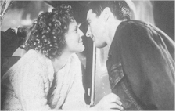
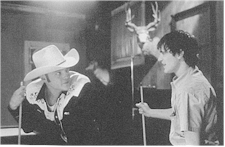
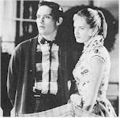
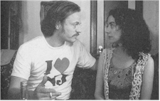
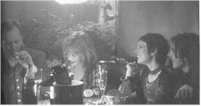

Contents | Features | Reviews | News | Archives | Store

Contents | Features | Reviews | News | Archives | Store
 |
23rd Toronto
International |
Yet another year of freezing through a round of films at the Toronto International Film Festival has come to a close (if those theatres were any colder, they could double as meat storage -- or, come to think of it, maybe they already do). As usual, the selection of American films was first rate, but there were too many of the best ones scheduled at the same screening time; flipping a coin became a necessity more than once. Nevertheless, there were enough films floating around that a filmgoer was going to be able to put together a credible "seen" list with very little difficulty.
In the name of film preservation/restoration, another offering from the cinematic archives has emerged: the "newly restored" 1957 noir classic, Touch of Evil. Directed by Orson Welles, it is noteworthy not only for the considerable emotional and visual punch it delivers, but also because it is the last American film that Welles ever directed.
Most certainly he had no control over its initial release; when studio execs saw Welles’ print, they were as baffled by it as Columbia’s Harry Cohn had been by the sophisticated narrative of Welles’ The Lady from Shanghai some ten years earlier (in Cohn’s case, he thought he had contracted for a little Rita Hayworth vehicle that could add some cash to the company’s bottom line). Unlike Cohn, however, those at Universal weren’t prepared to offer a cash reward to anyone willing to explain the plot to them, so some nipping and tucking was performed on Touch of Evil before its release. When Welles saw how the film had been, well, shanghaied, he was so upset that he dashed off a fifty-eight-page memo to Universal. The memo, which was discovered in 1990 but not published in full until this year, alternates between criticism at the studio’s behavior and offering suggestions for re-editing.
 The results on screen are surely a mixed blessing. No longer is the legendary
opening tracking shot relegated to the status of a credit sequence and its kinetic
elegance (not to mention Welles’ skillful ambient sound mix, can be enjoyed at
leisure (although it should be argued that, even with the credits in place, the
twenty-five second sequence shot was never really obscured). The psychological motivations
behind Quinlan’s misanthropy and his urge to act on hunches concerning an
individual’s guilt have been clarified by the additions of some dialogue. Less
justifiable, however, was the decision to excise nearly all of Henry Mancini’s
ice-cool, jazzy score from the film; it’s understandable that Welles would not have
appreciated its inclusion under the opening sequence, but why did the restoration process
not result in the score being placed under the closing credits? Did Welles despise the
score, or was this a truly inexcusable omission on the restorers’ part? Actually,
through this nearly wholesale excising of the score (except for the sequence involving the
murder of Uncle Joe Grande and the attempt to frame Susan Vargas for the crime), the
metaphorical use of the score as established in the former opening sequence -- that Susan
and Mike Vargas, acting as innocents abroad in the corrupt border town, are about to be
dragged down into said corruption, mostly through their own arrogance and naivete -- is
lost. After viewing this new version of Touch of Evil, the overall effect appears
to be one of having created neither a better nor worse version of the film, but merely
adding to the number of editions (now numbering four) in the marketplace.
The results on screen are surely a mixed blessing. No longer is the legendary
opening tracking shot relegated to the status of a credit sequence and its kinetic
elegance (not to mention Welles’ skillful ambient sound mix, can be enjoyed at
leisure (although it should be argued that, even with the credits in place, the
twenty-five second sequence shot was never really obscured). The psychological motivations
behind Quinlan’s misanthropy and his urge to act on hunches concerning an
individual’s guilt have been clarified by the additions of some dialogue. Less
justifiable, however, was the decision to excise nearly all of Henry Mancini’s
ice-cool, jazzy score from the film; it’s understandable that Welles would not have
appreciated its inclusion under the opening sequence, but why did the restoration process
not result in the score being placed under the closing credits? Did Welles despise the
score, or was this a truly inexcusable omission on the restorers’ part? Actually,
through this nearly wholesale excising of the score (except for the sequence involving the
murder of Uncle Joe Grande and the attempt to frame Susan Vargas for the crime), the
metaphorical use of the score as established in the former opening sequence -- that Susan
and Mike Vargas, acting as innocents abroad in the corrupt border town, are about to be
dragged down into said corruption, mostly through their own arrogance and naivete -- is
lost. After viewing this new version of Touch of Evil, the overall effect appears
to be one of having created neither a better nor worse version of the film, but merely
adding to the number of editions (now numbering four) in the marketplace.
As for this version’s status as the most definitive, there are other points to be considered. Although film preservation is undeniably necessary, film restoration is an area fraught with several questions, all of which have to do with the final intent of any restorative process. When one undertakes to restore a film based upon documentation written in the heat of feeling betrayed and confused (albeit a heat that was conveyed in, for Welles, a remarkably restrained tone), there is always the uneasy specter of sober second thinking hovering over the entire enterprise. More specifically, is there any real assurance that, if Welles were alive today, he might not have had second thoughts concerning the changes he would have made to his minor masterpiece? Obviously, you have to take history from what is, instead of what might have been, and I, for one, am grateful to see Touch of Evil in whatever form is available, but it is nevertheless unnerving -- and a touch insulting -- to suggest that any form other than this one has been an inferior version. The film hadn’t been so severely tampered with in the first place that its brilliance had been permanently marred.
 The new film from Bryan Singer (The Usual Suspects) Apt
Pupil, is, as might be expected, one of the more unnerving American offerings at the
festival; there’s nothing like seeing a photograph of Josef Mengele in the opening
credits of a film, blown up to approximately four feet square, to get the old blood
pumping first thing in the morning. Singer is out to establish that what you are about to
witness is a Very Serious Business, Indeed. Adapted from a Stephen King novella, Pupil
has at its center an old Nazi war criminal (the always inimitable and impeccable Ian
McKellan) and a teenager (a much older and very masterful Brad Renfro, from The Client)
who blackmails the Nazi into revealing his grisly past. Since this is Stephen King
territory, it will come as no surprise that events take several bizarre and frightening
turns, as man and boy unleash the darker tendencies of the other. The concept of
"playing with fire" has never been so terrifyingly illustrated, nor has the
seductive nature of evil. Apt Pupil opens nationwide October 16. [Click here to read the full review]
The new film from Bryan Singer (The Usual Suspects) Apt
Pupil, is, as might be expected, one of the more unnerving American offerings at the
festival; there’s nothing like seeing a photograph of Josef Mengele in the opening
credits of a film, blown up to approximately four feet square, to get the old blood
pumping first thing in the morning. Singer is out to establish that what you are about to
witness is a Very Serious Business, Indeed. Adapted from a Stephen King novella, Pupil
has at its center an old Nazi war criminal (the always inimitable and impeccable Ian
McKellan) and a teenager (a much older and very masterful Brad Renfro, from The Client)
who blackmails the Nazi into revealing his grisly past. Since this is Stephen King
territory, it will come as no surprise that events take several bizarre and frightening
turns, as man and boy unleash the darker tendencies of the other. The concept of
"playing with fire" has never been so terrifyingly illustrated, nor has the
seductive nature of evil. Apt Pupil opens nationwide October 16. [Click here to read the full review]
Home Fries , from first-time feature director Dean Parisot, is an odd blend of black comedy and quirky love story that lives up to some, but not all of, its premise and promise. A teenager named Sally (Drew Barrymore), who works at the local Burger joint, has been impregnated by a married man, who, not long after his inamorata gets wise and tells him to get lost, is persuaded, courtesy of aerial harassment from a helicopter, to have a fatal heart attack and die. The helicopter, as it turns out, was driven by the man’s two stepsons, Dorian and Angus (Luke Wilson and Jake Busey, respectively. Their iron-hand-in-a-velvet-glove mother (Catherine O’Hara doing a hilariously subversive take on her Home Alone roles) is the instigator of this crime. She is not in the clear, however, in spite of the fact that she is not a suspect; there is the matter of the ex-mistress, who must also be disposed of. So this modern Ma Barker sends her two boys to locate and take care of Sally. Unbeknownst to them both, one of them -- the more gentle Dorian -- falls in love with Sally, and so on. What keeps this film going is Barrymore’s earnest, believable and touchingly vulnerable performance as the victim of the piece who refuses to see herself as such. Unfortunately the film isn’t as fair to her as she is to it; far too often, the film wastes time unnecessarily milking the audience for sympathy for Sally’s plight (who couldn’t feel sorry for a poor teenager with a drunk for a father, and a dead deadbeat for a lover?), while subsequently draining the humor of some of its much-needed blackness. Home Fries is not necessarily a bad film, but, after seeing it, the viewer is left with a sense of what could have been with just a little more pushing of the envelope. [Click here to read the full review]
In the category of thoroughgoing black comedy, Clay Pigeons is one of the best contemporary examples to date -- so good, in fact, that at times it reaches, and almost attains, the level of humor best described as Kubrickian, and there’s no higher praise possible. The film starts with an illicit affair gone bad in an indeterminate Arkansas hamlet, and culminates in a search for a serial killer. In between, the audience gets to watch Joaquin Phoenix fulfill the acting promise he established in To Die For and the wan Return to Paradise, as he displays a deftness for comedy in the role of a well-meaning, small-town mechanic who chooses the wrong woman in front of which to drop his pants, and lives to regret it (any resemblance between the trials of this individual and the current occupant of 1600 Pennsylvania is, as the disclaimer suggests, purely unintentional). Vince Vaughn, also late of Return to Paradise (and, of course, Swingers) is terrifyingly funny as the good-ol’-boy psychopath who lays on the charm, the one-liners and the kitchen knives with equal assiduousness . One scene involving Vaughn and Janeane Garafalo, who plays the FBI agent assigned to track him down, is emblematic of how well-crafted this film is. They meet in a bar, neither knowing who the other represents, and their conversation has the impact on the viewer of watching a traffic accident up close; it’s difficult to look away, the dreadfulness of the situation be damned. Just how unrepentantly crass are the sensibilities here? Well, just consider the deft application of ironic in-jokes (the most obvious being the casting of Scott Wilson, who played the nastiest of the two In Cold Blood killers, as the unassuming local sheriff), then consider a scene in which the act of fishing a decomposing corpse from a lake is rendered excruciatingly hilarious, and a frenetic pace accented by the music of the most talented John Lurie, then judge for yourself. This is former video director David Dobkin’s first feature and he and screenwriter Matt Healy deserve all the praise that can be heaped upon them. Devotees of this type of warped humor will be quite willing to place Dobkin alongside John Dahl in their pantheon of neo-noir specialists. [Click here to read the full review]
Pleasantville attempts to answer the questions of couch potatoes who really want to know if the black-and-white TV-ville inhabited by Donna Reed, the Beav and Wally and Kitten is really as perfect (and real) as it seems. Two contemporary teenagers come to discover first-hand that, yes, indeed, it actually is. Mom (Joan Allen) wears the prerequisite pearls at seven a.m. and a bouffant and serves breakfasts that would cause Teamsters to keel over in shock, while Dad (William H. Macy) always comes home right on time, hangs up his hat, and shouts, "Honey, I’m home!" in the same way, every day. Then, the teens’ modern imperfections -- they have more than a little trouble adhering to the script -- cause the flawless unreality in Pleasantville to unravel. Dinners don’t get made and -- horrors! -- holding hands, formerly the only way to "go all the way" in Standards and Practices-land, becomes passe, as Little Sister goes Sweet Little Sixteen a few steps better. [Click here to read the full review]
Pleasantville has an intriguing concept -- baby boomers who adore that post-modern ironic stance of craving nostalgia while simultaneously debunking it will no doubt find the film irresistible. However, the film tends to pull a few crucial punches as it attempts to extricate itself from the inevitable narrative corner into which it has painted itself; it doesn’t have the courage to revel in a darker satirical stance, but attempts to pass itself off as so doing. The film struggles valiantly toward a quasi-satisfactory ending, but, instead of being great, Pleasantville ends up being, well, merely pleasant.
Heaven, part of the Midnight Madness series, is a irredeemable mess about a compulsive gambler, a gangster who owns a strip club, and a transsexual stripper who also possesses the gift of clairvoyance. The title is apt, for it requires no little amount of divine intervention to infuse this moribund film with any degree of credibility. Add some truly trite dialogue, a pretentious, artily disjunctive narrative structure and sullen acting, and you have a recipe for camp -- or you would have if the filmmakers hadn’t been taking it upon themselves to treat this ridiculous scenario as the cinematic equivalent of the Rosetta Stone . But Heaven isn’t difficult to decode: it’s simply a waste of valuable film and time.
Todd Solondz (Welcome to the Dollhouse) continues his exploration of the dysfunctional suburban family with Happiness. This is the film which caused such a stir at this year’s Cannes film festival; much ink was spilled over characters who spilled their semen on screen and the inclusion of a character who is a child molester. The controversy reached such heights that Universal decided not to release it under its banner, and, as Miramax did with Larry Clark’s Kids a couple of years ago, created a new releasing company to dispose of the goods while keeping its distance -- and control of the product. It’s unfortunate that the fuss was made in the first place over a couple of minor dribbles on walls (no "money shots" here, friends), because the real attention should focus upon the fine ensemble acting (especially Louise Lasser, as the embittered wife and mother who has put a lifetime into her family only to come up with nothing; this is not Mary Hartman) and the script’s clear-cut exploration of all of the idiosyncrasies of human behavior, both funny and painful. As for the molestation element, no physical contact between molester and victim is ever displayed, but Solondz, through his choice of setting and the occupation of the molester (a psychiatrist) obviously succeeded in hitting many raw nerves. The final scene between the molester and his son (not the victim, by the way, in spite of what you’ve read elsewhere) ends with a line so quietly chilling as to raise bile regardless of the toughness of the viewer. The landscape is typical Solondz: a mix of low-key sadism directed against, and pity for, his characters, with no easy answers. [Click here to read the full review][Click here to read the interview]
Speaking of Larry Clark, his sophomore effort, Another Day in Paradise, screened one morning at 8:30. For those of us who managed to stagger in on time, there was a really pleasant surprise waiting. James Woods and Melanie Griffith play two low-life, braggadocio-prone hoods, Mel and Sid, who are on the edge of oblivion and looking for someone to help them make one big score. They "adopt" two dropouts, Rosie and Bobbie (Natasha Gregson Wagner and Vincent Kartheiser) and the foursome become one big happy family, with "Mom" and "Dad" teaching the two "kids" the trade and instructing them in matters of style (on this latter point, the kids are obviously the type who are easily impressed). Then, as is typical in this sort of tale, things begin to unravel. Clark, going about as mainstream as anyone could ever expect him to go, has made a reasonably tidy and entertaining little thriller; he’s working in the vein of The Asphalt Jungle and Kubrick’s The Killing, and he updates and imitates these two classics just enough to make the viewer think that this just might be his forte if he keeps working at it. The acting is great, and the plot, though formulaic, has enough twists and turns to keep things moving along, so the film should find an audience (how large is another question). There are, however, two drawbacks: the cinematography looks far too grainy, even for a pretentiously pseudo-documentary visual style (think video blown up onto 35 mm). Moreover, Clark still can’t resist the urge to wallow in sleeze; the scene in which Bobbie has the bejesus kicked out of him is framed and edited in that same leering, lust-for-violence, fashion that was so repellant in Kids. At least, however, Clark is working with a more intelligent script this time out (adapted by Christopher Landon and Stephen Chin from Eddie Little’s book), so the more puerile elements of his work have been reined in to acceptable levels. [Click here to read the full review]
Contents | Features | Reviews | News | Archives | Store
Copyright © 1999 by Nitrate Productions, Inc. All Rights Reserved.